Docs
User Interface ( UI )
Γενικά
Μόλις ανοίξετε το φάκελο που περιέχει το AnnoTool, βρίσκετε το αρχείο που λέει index.html και κάνετε διπλό κλικ για να ανοίξει. Ανοίγει στον Google Chrome και αυτή είναι η αρχική οθόνη που βλέπετε :
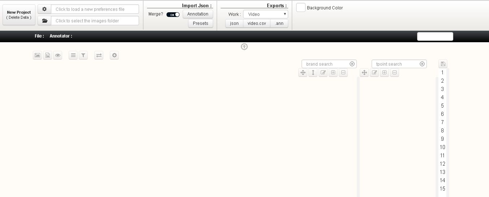Top Panel
Κάθε φορά που ξεκινάτε ένα νέο αρχείο, πατάτε New Project πάνω αριστερά και εμφανίζεται παράθυρο επιβεβαίωσης. πατάμε ΝΑΙ.
Μετά φορτώνετε το txt πατώντας το κουμπί 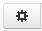 αφού έχετε γράψει τον τίτλο του αρχείου που θα κάνετε και το όνομα του Annotator μέσα σε αυτό. Μετά φορτώνετε τις εικόνες πατώντας το κουμπί 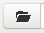. Αν έχετε το txt στον ίδιο φάκελο που βρίσκεται και ο φάκελος με τις εικόνες, σας πάει κατευθείαν εκεί και πατάτε ΟΚ.
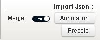
Με το κουμπί Annotation εισάγετε ότι δουλειά έχετε κάνει στο συγκεκριμένο αρχείο ενώ το κουμπί Presets εισάγει ΜΟΝΟ τις μνήμες του συγκεκριμένου json
Η επιλογή Merge σας επιτρέπει να εισάγετε περισσότερα από ένα json αν είναι στο ON και ΜΟΝΟ ένα αν είναι στο OFF.
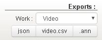
Δίπλα από αυτά έχει τις επιλογές εξαγωγής json + csv. Πρώτα επιλέγετε Videos ή Photos αναλόγως με τον τύπο του Project που κάνετε και μετά κατεβάζετε json + csv είτε έχετε ολοκληρώσει αυτό που κάνετε είτε για να συνεχίσετε κάποια άλλη στιγμή.
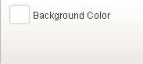
Τέλος, δίπλα έχει την επιλογή του χρώματος του φόντου (προτείνεται ένα πιο σκούρο φόντο αντί του άσπρου που κουράζει πιο εύκολα τα μάτια).
Μπάρα Πληροφοριών
Από κάτω έχει μία μαύρη μπάρα που έχει τις πληροφορίες που έχετε γράψει στο txt και όταν το φορτώσετε, εμφανίζονται εκεί και δεξιά τον αριθμό του frame ή της εικόνας που βρίσκεστε.
Επίσης όταν αλλάζετε σε photos θα δείτε ότι εμφανίζεται κι ένα νούμερο που στην ουσία δείχνει πόσα αρχεία περισσεύουν για να τελειώσεις και ανανεώνεται μονο του κάθε 10 δεύτερα.
Ακριβώς από κάτω έχει ένα βελάκι
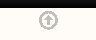
που δείχνει προς τα πάνω και όταν το πατήσετε, κρύβει ή εμφανίζει όλες τις παραπάνω πληροφορίες και επιλογές.
Γραμμή Εργαλείων
Αφού έχετε φορτώσει txt και τις εικόνες, βρίσκεστε εδώ :
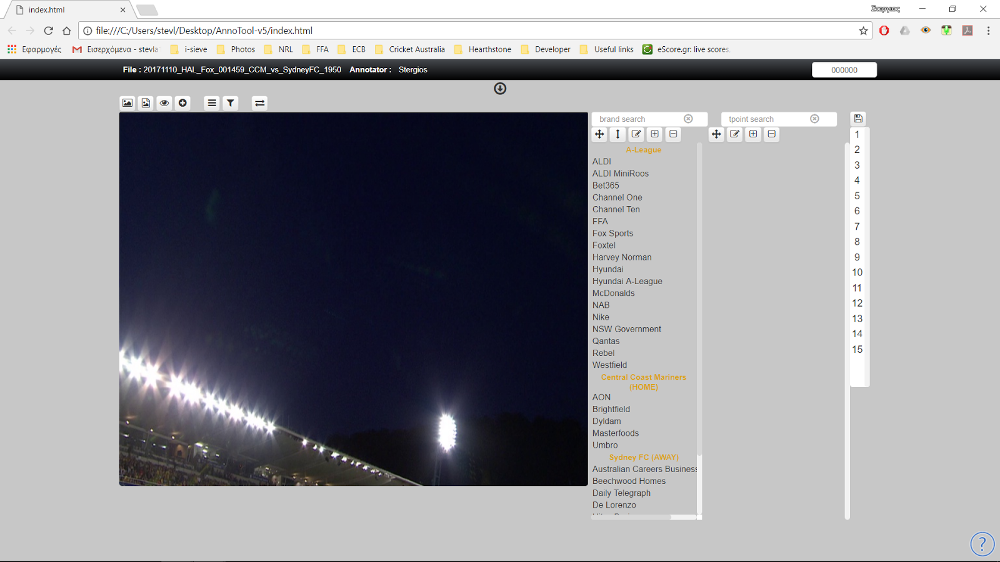Κάτω από αυτή τη μπάρα έχει τα εξής κουμπιά (αριστερά προς τα δεξιά) :
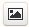Αντιγραφή της εικόνας που βρίσκεστε
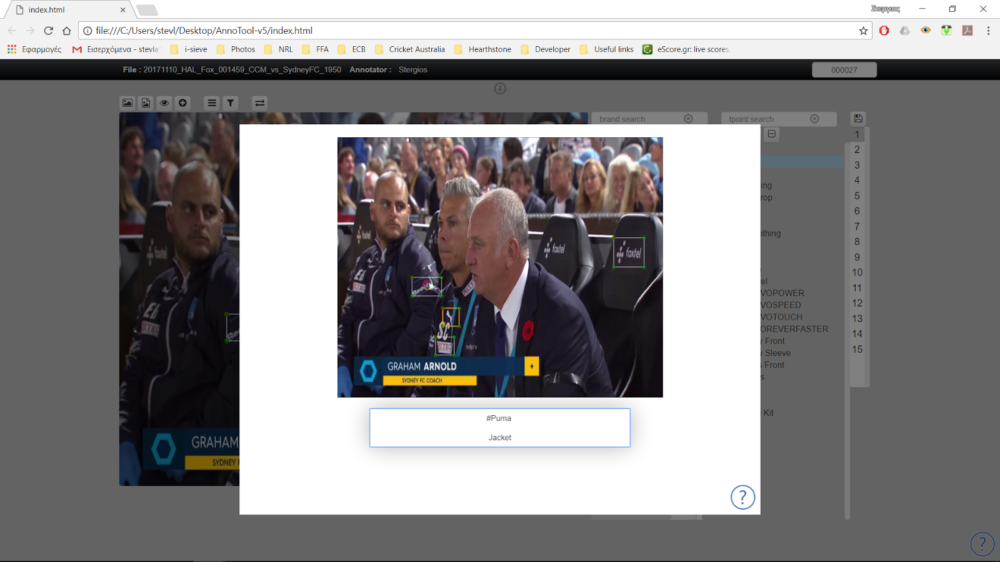
Αν έχετε επιλέξει από πριν κάποιο annobox τότε στο πλαίσιο κάτω απ την φώτο θα υπάρχει προς αντιγραφή και το αντίστοιχο brand και το tpoint
Αντίστοιχα, με αυτό θα σώσετε την εικόνα στον υπολογιστή και αν έχετε επιλέξει annobox η εικόνα παίρνει αυτόματα σαν όνομα το αντίστοιχο: brand-tpoint. Πολύ χρήσιμο εργαλείο για να βγάζουμε φώτο-παραδείγματα
Ανοίγει ένα παράθυρο και βλέπετε τα presets. Αποθηκεύει και τον αριθμό των hits που έχετε βάλει. 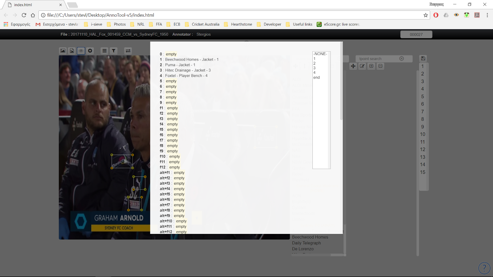
 Φιλτράρισμα ανά tpoint ή brand ή γκρουπ.
Φιλτράρισμα ανά tpoint ή brand ή γκρουπ.
Πολύ χρήσιμο αν θέλετε να δείτε πχ: ποια brands υπαρχουν στο shirt front.
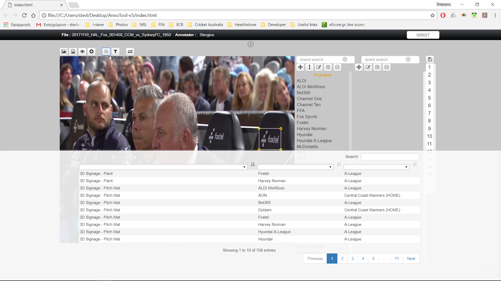
Φίλτρα annotation. Μπορείτε να πλοηγηθείτε με τα μπρος πισω του φιλτρου στις εικόνες που έχουν annotation. ( εδώ θα υπάρξει και βελτίωση σύντομα ) 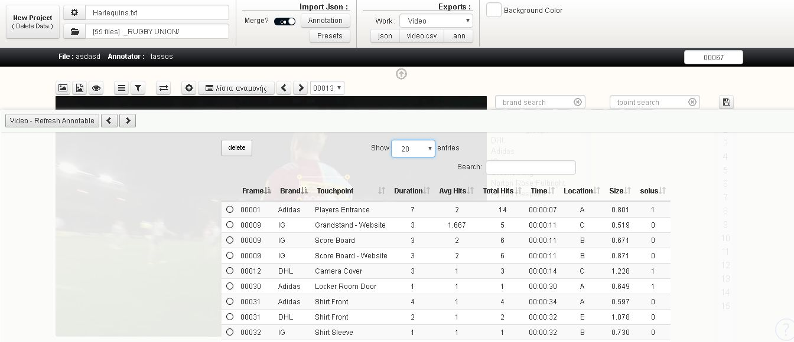
Εμφανίζει ένα πανελ κάτω στο παράθυρο σου που δείχνει τις επόμενες 10 εικόνες. Πολύ χρήσιμο κυρίως για web photos 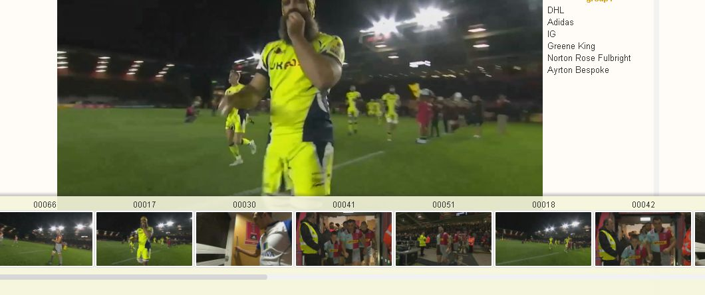
Η εικόνα προστίθεται στη λίστα που φαίνεται στα Φίλτρα annotation. και εμφανίζεται το παρακάτω πανελ όπου μπορείς να μετακινείσαι ΜΟΝΟ στις φώτο της λίστας. 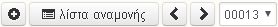
Λίστες
Πάνω από τις στήλες brand και tpoint έχει ένα κουτάκι αναζήτησης
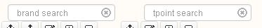
που μόλις ξεκινήσεις να γράφεις, σου εμφανίζει μόνο τα σχετικά αποτελέσματα όπως για παράδειγμα.
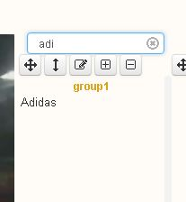
Κάτω από αυτό το κουτάκι έχει τα εξής κουμπιά (αριστερά προς τα δεξιά) :
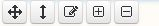
1ο. Ταξινόμηση brands ή ολόκληρη λίστας χειροκίνητα (με το ποντίκι).
2ο. Εμφάνιση/απόκρυψη λίστας με τα βελάκια.
3ο. Επεξεργασία του επελεγμένου brand.
4ο. Πρόσθεση brand.
5ο. Αφαίρεση brand.
Χειρισμός
Πληκτρολόγιο
Βασικές λειτουργίες
- όλα τα πράσινα κουμπιά είναι presets
- τα πορτοκαλί :
A : 1 πίσω
S : 1 μπροστά
SHIFT+A : 10 πίσω
SHIFT+S : 10 μπροστά
Z : σβήνει ΜΟΝΟ τα επιλεγμένα "κουτάκια"
X : τα σβήνει ΟΛΑ
C : κάνει copy τα πρασινισμένα κουτάκια και μετά με το D τα κάνει paste από πάνω τους
F : απενεργοποιεί όλα τα πρασινισμένα
V : τα κάνει ΟΛΑ πράσινα
σωσιμο σε μνημη : shift+(ενα απ τα πρασινα κουμπια)
paste απο μνημη : απλα παταμε το ανιστοιχο πληκτρο χωρίς το shift.
!!! επίσης σουπερ χρήσιμο :
το κουμπι ctrl μπορει να χρησιμοποιηθεί όπως στους φακέλους των windows.
δηλαδη με πατημένο το ctrl να πρασινίζετε μεμονωμένα όποια κουτάκια θέλετε.
και τέλος...στις λίστες με τα brands και τα assets μπορειτε πχ με το πάτημα του W να πάτε κατευθείαν στο Westfield, με το Κ στο KFC κτλ κτλ...
Αnnotation
Γενικές Οδηγίες
τα Βασικά
UNDER CONSTRUCTION
Γρήγορο Annotation
UNDER CONSTRUCTION